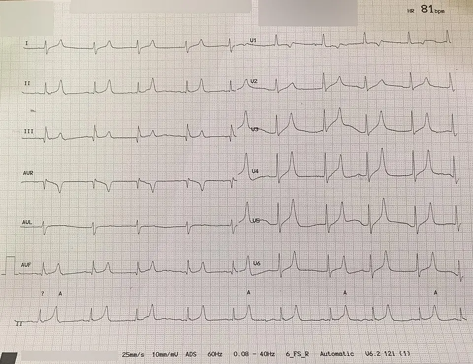

DX.2 — Troubles électrolytiques
1. Définition
Un trouble électrolytique est une concentration sanguine d'un ion hors de la norme. L'hyponatrémie est une natrémie inférieure à 135 mmol/L2. C'est le trouble le plus fréquent en pratique (définition retenue)La directive européenne ESICM, ESE et ERBP de 2014 définit l'hyponatrémie par une natrémie sous 135 mmol/L2. Elle la décrit comme le trouble hydro-électrolytique le plus courant. Il s'associe à plus de mortalité, de morbidité et de séjours longs2. La kaliémie normale va de 3,5 à 5,0 mmol/L (AIPS de Lokelma®)67851. Calcium et magnésium suivent les valeurs de référence du laboratoire. Le chapitre traite la présentation par une plainte non spécifique : fatigue, faiblesse, confusion, chute.
2. Épidémiologie (Suisse, puis Europe)
À BâleLes urgences universitaires de Bâle ont inclus 572 patients de mai 2007 à mai 20091. Parmi eux, 40 ont un trouble électrolytique comme diagnostic final à 30 jours, dont 21 diagnostiqués dès les urgences1. Seuls 46,0 % des diagnostics posés aux urgences correspondent au diagnostic final, et 51 % des diagnostics de sortie1. Aucune prévalence en population ne s'en déduit1, 40 patients sur 572 (7,0 %) ont un trouble électrolytique comme diagnostic final, contre 49 infections urinaires et 37 pneumonies1. L'hyponatrémie est le trouble hydro-électrolytique le plus courant (directive européenne 2014)2, car l'âge élevé, les diurétiques, l'insuffisance rénale et les cancers augmentent le risque. L'hyponatrémie sévère est liée à la mortalité4Une cohorte de 399 adultes turcs des urgences (2021-2022) avait une natrémie d'au plus 125 mmol/L4. La mortalité à 30 jours atteint 21,6 %, et l'urée et l'albumine la prédisent4. Le retard diagnostique prolonge les séjours.
| Chiffre | Population | Année | Source |
|---|---|---|---|
| 40 sur 572 (7,0 %) : trouble électrolytique comme diagnostic final à 30 jours1 | Patients des urgences universitaires de Bâle | 2007 à 2009 | Peng et al., Swiss Med Wkly 20151 |
| 46,0 % des diagnostics des urgences confirmés au diagnostic final1 | Mêmes patients, plaintes non spécifiques | 2007 à 2009 | Peng et al., Swiss Med Wkly 20151 |
| Mortalité à 30 jours de 21,6 % pour une natrémie de 125 mmol/L ou moins4 | 399 adultes des urgences d'un hôpital turc | 2021 à 2022 | Ir J Med Sci 20244 |
Ces trois chiffres viennent de populations d'urgence, donc aucun ne donne une prévalence en population générale. Ils montrent cependant que le trouble électrolytique est un diagnostic fréquent et souvent manqué lors d'une plainte non spécifique.
3. Physiopathologie
Le sodium fixe l'osmolalité du plasma et donc le volume des cellules. L'eau suit le sodium : un déséquilibre déplace l'eau entre les compartiments.
• Amorce (niveau moléculaire). L'ADH fait ouvrir les canaux à eau du rein. Un excès d'ADH, ou une perte de sodium, fait baisser la natrémie.
• Développement (niveau cellulaire). L'eau entre dans les cellules, car le plasma est devenu hypotonique. Les neurones gonflent.
• Installation (niveau tissulaire). Le cerveau, enfermé dans le crâne, devient œdémateux. Il adapte ses osmolytes en quelques jours.
• Maintien (niveau clinique). Le tableau clinique comprend des céphalées, des nausées, une confusion, des convulsions puis un coma. Une correction trop rapide provoque la démyélinisation osmotique, car les neurones adaptés se déshydratent.
Le potassium fixe le potentiel de repos des cellules excitables. Une hyperkaliémie dépolarise le myocarde et provoque une arythmie. Une hypokaliémie hyperpolarise les cellules, d'où faiblesse et arythmie. Le calcium stabilise les canaux sodiques : l'hypercalcémie ralentit les cellules, d'où fatigue et constipation ; l'hypocalcémie les rend hyperexcitables, d'où tétanie.
| Lésion ou perturbation | Exploration qui la montre | Thérapeutique qui la corrige (mécanisme) |
|---|---|---|
| Hyponatrémie hypotonique | Natrémie, osmolalité plasmatique et urinaire, natriurèse | Chlorure de sodium hypertonique si grave ; restriction hydrique ou tolvaptan dans le SIADH (blocage du récepteur de l'ADH) |
| Hyperkaliémie | Kaliémie, ECG | Calcium (protège le myocarde), insuline avec glucose (fait entrer le potassium dans les cellules), élimination |
| Hypokaliémie | Kaliémie, ECG | Chlorure de potassium (restaure le stock) |
| Hypercalcémie | Calcémie corrigée, PTH | Hydratation salée, puis acide zolédronique (inhibe la résorption osseuse) |
4. Démarche diagnostique
Étape 1 — Chercher les drapeaux rouges. Dans la leçon DX.2 (troubles électrolytiques), chaque drapeau est cliquable : sa fenêtre dit pourquoi il est rouge.
| Drapeau rouge | Signe ou examen qui tranche | Piège | Conduite immédiate |
|---|---|---|---|
| 🚩 Convulsions ou comaSignes d'œdème cérébral dans une hyponatrémie sévère. L'urgence est le traitement hypertonique.2 | Natrémie immédiate, glycémie | Chercher d'abord un AVC ou une épilepsie | Chlorure de sodium hypertonique selon protocole |
| 🚩 Anomalie de l'ECGOndes T pointues, élargissement du QRS ou bradycardie évoquent l'hyperkaliémie. Le risque est l'arrêt cardiaque. | ECG et kaliémie en urgence | Attendre le laboratoire avant de traiter un ECG évocateur | Monitorage, calcium IV |
| 🚩 Hypercalcémie sévèreUne calcémie corrigée d'au moins 3,0 mmol/L définit l'hypercalcémie maligne traitée par Zometa®56257. Une cause maligne est fréquente. | Calcémie corrigée par l'albumine | Oublier de corriger par l'albumine | Hydratation salée, avis spécialisé |
| 🚩 Insuffisance rénale aiguëElle cause hyperkaliémie et acidose. Le DFGe et la créatinine tranchent. | Créatinine, DFGe | Continuer IEC et diurétiques | Stopper les médicaments en cause |
Étape 2 — Il n'y a aucun drapeau rouge.
• 2.1 Doser sodium, potassium, calcium, créatinine et glycémie sur la même prise de sang2.
• 2.2 Il faut évaluer le volume extracellulaire : déshydraté, normal ou surchargé2.
• 2.3 Il faut relire les médicaments : diurétiques, ISRS, IEC, ARA, triméthoprime2.
• 2.4 Chercher la cause : endocrinienne, rénale, digestive, néoplasique2.
• 2.5 Chercher une infection associée : infection urinaire et pneumonie côtoient ces troubles dans la même cohorte2.
Dans la leçon DX.2 (troubles électrolytiques), l'ordre des diagnostics différentiels de la liste est un ordre canonique, pas une prévalence établie.
5. Anamnèse ciblée et drapeaux rouges
Les questions clés recherchent d'abord les pertes digestives, les diurétiques et les antidépresseurs, les boissons et l'alcool. Elles explorent ensuite le cancer, les insuffisances d'organe et les symptômes neuromusculaires.
Drapeaux rouges actionnables.
| Drapeau rouge | Ce qu'il impose tout de suite |
|---|---|
| 🚩 Convulsions, coma, vomissements avec céphalées | Urgence vitale : natrémie immédiate, traitement hypertonique, hospitalisation en soins intensifs, avis de néphrologie. |
| 🚩 Palpitations, bradycardie, QRS large | ECG, kaliémie, calcium IV, monitorage. |
| 🚩 Confusion avec soif et polyurie | Calcémie corrigée, hydratation, hospitalisation et avis d'oncologie ou d'endocrinologie. |
6. Examen physique ciblé, région par région
Il faut noter le normal avant le pathologique. Ces signes ont une valeur qualitative : ils orientent, mais ils ne tranchent pas.
L'examen ciblé des troubles électrolytiques suit cet ordre : constantes ; hydratation ; cœur et poumons ; puis neurologie. Chaque fenêtre précise le normal, puis le signe du trouble ionique, avec sa technique et son piège.
7. Approche syndromique
| Syndrome | Signes fonctionnels (définition) | Signes physiques (geste de recherche) | Mécanisme |
|---|---|---|---|
| 7.1 Syndrome d'hyponatrémie | céphaléesDouleurs de tête liées à l'œdème cérébral., nauséesEnvie de vomir, signe précoce d'œdème cérébral., confusionTrouble aigu de l'attention et de l'orientation. | Orientation et réflexes à l'examen neurologique ; recherche de convulsions. | L'eau entre dans les neurones : le cerveau gonfle. |
| 7.2 Syndrome d'hyperkaliémie | faiblesse musculaireBaisse de force, surtout proximale., palpitations. | ECG : ondes T pointues, QRS large ; pouls lent. | La dépolarisation du myocarde ralentit la conduction. |
| 7.3 Syndrome d'hypokaliémie | crampesContractions musculaires douloureuses involontaires., faiblesse, palpitations. | ECG : aplatissement de l'onde T ; réflexes diminués. | L'hyperpolarisation rend la cellule moins excitable. |
| 7.4 Syndrome d'hypercalcémie | polyurie et soifÉmission abondante d'urine avec besoin de boire, par diabète insipide néphrogénique., constipation, fatigue. | Déshydratation ; confusion ; QT court à l'ECG. | Le calcium élevé ralentit les cellules excitables et le rein concentre mal. |
8. Diagnostic positif et critères
| Trouble électrolytique | Ce qui suffit | Ce qui ne suffit pas (piège d'examen) |
|---|---|---|
| Hyponatrémie | Natrémie sous 135 mmol/L (directive ESICM, ESE et ERBP 2014)2. | Une natrémie basse seule ne donne pas la cause : il faut l'osmolalité et le volume. |
| Hypercalcémie | Calcémie corrigée supérieure ou égale à 3,0 mmol/L pour la forme maligne grave (AIPS de Zometa®)56257. | Une calcémie brute sans albumine peut tromper. |
| Hypo et hyperkaliémie | Kaliémie normale de 3,5 à 5,0 mmol/L (AIPS de Lokelma®) ; hors de ces bornes, le trouble est posé67851. | Un prélèvement hémolysé augmente faussement le potassium. |
Hypokaliémie : l'AIPS du chlorure de potassium distingue deux paliers, kaliémie inférieure à 2,0 mmol/L et supérieure à 2,5 mmol/L, pour le débit de perfusion29552. Aucun score ne remplace la clinique.
9. Examens complémentaires
9.a Gold standard. Aucun gold standard unique2. L'ionogramme sanguin pose le diagnostic ; l'étiologie vient du bilan orienté.
9.b Première intention.
On prescrit d'abord : ionogramme sanguin, créatinine, glycémie, calcémie, albumine ; ECG ; puis osmolalité plasmatique et urinaire, sodium urinaire.
Un ECG commenté montre les ondes T pointues de l'hyperkaliémie sévère.
9.c Alternatives. Grossesse : ionogramme sans changement ; tolvaptan contre-indiqué66962. Insuffisance rénale sévère : le tolvaptan n'a pas été étudié, et l'anurie le contre-indique66962. Une allergie aux produits iodés ou un dispositif non compatible IRM reste sans objet pour le diagnostic.
9.d Deuxième intention.
En deuxième intention, on demande : PTH, vitamine D ; cortisol, TSH ; puis TDM thoracique.
10. Arbre décisionnel
• Si convulsions, coma ou QRS large → traiter d'abord : hypertonique ou calcium IV, puis chercher la cause.
• Si la natrémie est inférieure à 135 mmol/L, il faut doser l'osmolalité plasmatique et urinaire, puis évaluer le volume2.
• Si le patient est hypovolémique, il faut remplir par soluté isotonique. S'il est en surcharge, il faut traiter la cause (cœur, foie, rein). Si son volume est normal, il faut chercher SIADH, cortisol, TSH.
• Si le potassium est élevé, il faut faire un ECG ; s'il est bas, il faut rechercher des pertes digestives ou rénales.
• Si le calcium est élevé, il faut mesurer la calcémie corrigée, hydrater et doser la PTH.
11. Prise en charge selon les recommandations suisses
11.A But thérapeutique. Corriger l'anomalie sans dépasser la vitesse sûre2. Pour le sodium, l'AIPS de Samsca® demande que la hausse ne dépasse pas 10 à 12 mmol/L en 24 heures ni 18 mmol/L en 48 heures66962.
11.B Moyens.
Urgence : le patient a une hyponatrémie sévère symptomatique.
• 1. Il faut monitorer le patient, poser une voie IV et doser la natrémie et la glycémie.
• 2. Administrer du chlorure de sodium hypertonique en bolus selon le protocole de l'établissement : le protocole fixe le volume. L'AIPS du chlorure de sodium à 20 %56539 le décrit comme un additif à diluer : Natrium chloratum Sintetica 20 %Sa DCI est le chlorure de sodium concentré. Il appartient à la classe des additifs électrolytiques (ATC B05XA03)56539. Son groupe réunit les solutions électrolytiques à ajouter (B05XA), dont le chlorure de potassium (B05XA01)56539. Selon l'AIPS (n° 56539), il traite l'hyponatrémie, l'hypochlorémie et l'intoxication par l'eau56539. La posologie correspond au besoin en sodium : mmol de sodium = poids en kg × 0,2 × (natrémie de référence − natrémie actuelle)56539. Il s'injecte uniquement par voie IV, dilué, juste avant la perfusion56539. Il est contre-indiqué en cas d'hypernatrémie, d'insuffisance cardiaque et d'œdème pulmonaire56539.
• 3. Il faut contrôler la natrémie toutes les deux heures environ, selon le protocole.
• 4. Si la hausse atteint 12 mmol/L en 24 heures ou 18 mmol/L en 48 heures, interrompre le traitement et donner une solution hypotonique, comme l'impose l'AIPS de Samsca®66962. Le sodium hypertonique expose au même risque, car une hausse d'au moins 12 mmol/L en 24 heures peut provoquer une démyélinisation osmotique66962.
Urgence : le patient a une hyperkaliémie avec signes ECG.
• 1. Il faut monitorer le patient, poser une voie IV et répéter la kaliémie et l'ECG.
• 2. Il faut donner du calcium IV pour protéger le myocarde. Le gluconate de calcium injectable est absent de l'AIPS suisse, et sa dose vient donc de l'ERC 20258. Il faut donner 10 mL de chlorure de calcium à 10 % IV en 5 minutes, ou à défaut 30 mL de gluconate de calcium à 10 % en 10 minutes8. Il faut refaire l'ECG et répéter la dose si les anomalies persistent7. Le médicament est le Gluconate de calciumSa DCI est le gluconate de calcium. Il appartient à la classe des sels de calcium, dans le groupe des suppléments de calcium, dont le carbonate de calcium fait aussi partie. Il protège le myocarde lors d'une hyperkaliémie avec signes ECG. Absent de l'AIPS suisse, il s'administre selon l'ERC 2025 à la dose de 30 mL à 10 % IV en 10 minutes, sous monitorage ECG8. Il ne baisse pas la kaliémie, mais il stabilise la membrane des cellules cardiaques le temps que l'insuline et l'élimination agissent.
• 3. Il faut faire entrer le potassium dans les cellules. L'ERC 2021 recommande 10 unités d'insuline à action rapide avec 25 g de glucose (250 mL à 10 %) par voie IV en 15 à 30 minutes7. Si la glycémie initiale est inférieure à 7 mmol/L, une perfusion de glucose à 10 % à 50 mL/h pendant 5 heures prévient l'hypoglycémie7. L'AIPS d'Actrapid HM prévoit la voie sous-cutanée ou intraveineuse et signale le risque d'hypokaliémie sous insuline intraveineuse44610. Le médicament est Actrapid HMSa DCI est l'insuline humaine. Elle appartient à la classe des insulines à action rapide (ATC A10AB01)44610, dans le groupe des insulines et analogues (A10A). Selon l'AIPS (n° 44610), elle s'emploie dans le diabète sucré lorsqu'un traitement insulinique est nécessaire44610. Les besoins usuels du diabétique se situent entre 0,3 et 1,0 U/kg/jour44610. Pour l'hyperkaliémie, l'ERC 2021 recommande 10 unités d'insuline à action rapide avec 25 g de glucose par voie IV7. La glycémie se surveille ensuite, car l'hypoglycémie est le risque principal du geste7. L'AIPS précise que toutes les insulines déplacent le potassium vers les cellules et peuvent provoquer une hypokaliémie44610. Associer du glucose sous forme de Glucosum BichselSa DCI est le glucose. Il appartient à la classe des solutions de glucose (ATC B05BA03)32920, dans le groupe des solutions de nutrition parentérale (B05BA). Selon l'AIPS (n° 32920), il traite les états hypoglycémiques et apporte de l'énergie32920. Le débit ne dépasse pas 0,5 g de glucose par kg et par heure32920. Les solutions de 20 à 50 % se perfusent par un cathéter veineux central32920. Il est contre-indiqué en cas d'hyperglycémie et d'hypokaliémie sans apport parallèle de potassium32920.
• 4. Éliminer le potassium (diurétique de l'anse, chélateur ou dialyse) et stopper les médicaments en cause. Le chélateur est Lokelma®Sa DCI est le cyclosilicate de zirconium sodique. Il appartient à la classe des chélateurs du potassium (ATC V03AE10)67851, dans le groupe des médicaments de l'hyperkaliémie (V03AE). Selon l'AIPS (n° 67851), il traite l'hyperkaliémie de l'adulte67851. Il ne sert jamais de médicament d'urgence lors d'une hyperkaliémie menaçant le pronostic vital67851. Si la kaliémie dépasse 5,0 mmol/L, la dose initiale est de 10 g trois fois par jour par voie orale, pendant 24 à 48 heures67851. La dose d'entretien est ensuite de 5 g par jour, avec un maximum de 10 g par jour67851. La normokaliémie visée se situe entre 3,5 et 5,0 mmol/L67851. Chaque sachet de 5 g contient environ 400 mg de sodium67851. Il n'agit pas en urgence vitale67851.
Hors urgence.
• 1. Mesures générales : traiter la cause, corriger le volume, arrêter le médicament responsable.
• 2. Dans l'hyponatrémie par SIADH, il faut d'abord restreindre l'eau, puis donner du tolvaptan en milieu hospitalier. L'AIPS l'autorise dans l'hyponatrémie du SIADH, avec un début de traitement à l'hôpital66962. La spécialité est Samsca®Sa DCI est le tolvaptan. Il appartient à la classe des antagonistes de la vasopressine (ATC C03XA01)66962, dans le groupe des autres diurétiques (C03X). Selon l'AIPS (n° 66962), il traite l'hyponatrémie secondaire au SIADH66962. La dose initiale est de 15 mg une fois par jour, et elle peut monter jusqu'à 60 mg par jour66962. La dose de 7,5 mg peut s'envisager en cas de risque de correction trop rapide66962. Le traitement commence à l'hôpital66962. Il est contre-indiqué en cas d'hypovolémie, d'hypernatrémie, d'anurie, d'incapacité à ressentir la soif, de grossesse et d'allaitement66962.
• 3. Hyponatrémie hypovolémique : remplir par Natrium chloratum Bichsel isotoniqueSa DCI est le chlorure de sodium à 0,9 %29800. Il appartient à la classe des solutions d'électrolytes (ATC B05BB01)29800, dans le groupe des solutions de remplissage. Selon l'AIPS (n° 29800), il traite la déshydratation et l'hyponatrémie29800. Le débit recommandé chez l'adulte est de 9 mL/min, et la dose maximale de routine est de 2000 mL par jour29800. Il est contre-indiqué en cas d'hypervolémie, d'hypernatrémie, d'hyperchlorémie et de déshydratation hypertonique29800.
• 4. Hypokaliémie : substituer le potassium par Kaliumchlorid B. BraunSa DCI est le chlorure de potassium. Il appartient à la classe des solutions électrolytiques (ATC B05X)29552, dans le groupe des solutions électrolytiques à ajouter (B05XA). Selon l'AIPS (n° 29552), il apporte du potassium de substitution29552. Si la kaliémie dépasse 2,5 mmol/L, le débit ne dépasse pas 10 mmol par heure et la solution contient au plus 40 mmol/L29552. Si la kaliémie est inférieure à 2,0 mmol/L, le débit monte jusqu'à 40 mmol par heure et la solution jusqu'à 80 mmol/L29552. L'apport quotidien maximal est de 200 mmol, ou de 400 mmol si la kaliémie est inférieure à 2,0 mmol/L29552. Il est contre-indiqué en cas d'hyperkaliémie, d'hyperchlorémie, d'anurie ou d'oligurie, d'insuffisance rénale, d'insuffisance surrénalienne non traitée, de déshydratation sévère et d'acidose29552.
• 5. Hypercalcémie maligne : hydratation salée, puis Zometa®Sa DCI est l'acide zolédronique. Il appartient à la classe des bisphosphonates (ATC M05BA08)56257, dans le groupe des médicaments des maladies osseuses (M05B). Selon l'AIPS (n° 56257), il traite l'hypercalcémie maligne, définie par une calcémie corrigée d'au moins 3,0 mmol/L56257. La dose est de 4 mg en perfusion unique d'au moins 15 minutes56257. Le patient s'hydrate avant la perfusion56257. Le médicament n'est pas recommandé si la clairance est inférieure à 30 mL/min dans les métastases osseuses56257. Il est contre-indiqué pendant la grossesse et l'allaitement56257.
• 6. En cas de surcharge, donner du furosémide : Lasix®Sa DCI est le furosémide. Il appartient à la classe des diurétiques de l'anse (ATC C03CA01)30629, dans le groupe des diurétiques à plafond élevé (C03C). Selon l'AIPS (n° 30629), il traite les œdèmes d'origine cardiaque, hépatique et rénale30629. La dose initiale de l'adulte est de ½ à 2 comprimés de 40 mg par jour30629. La dose maximale recommandée de 1500 mg par jour concerne la voie IV chez l'insuffisant rénal grave30629. Il est contre-indiqué en cas d'hypokaliémie sévère, d'hyponatrémie sévère, d'hypovolémie, d'anurie, de coma hépatique et pendant l'allaitement30629.
Ordre du traitement. Le traitement suit le risque vital. Pour le potassium, le calcium protège d'abord le myocarde, puis l'insuline avec glucose déplace le potassium dans les cellules, enfin le diurétique, le chélateur ou la dialyse l'éliminent. Pour le sodium, le traitement hypertonique s'adresse aux symptômes graves, car l'œdème cérébral menace le pronostic, et la recherche de la cause vient ensuite.
Mesures non pharmacologiques. La restriction hydrique traite le SIADH, tandis que l'arrêt du médicament responsable corrige la cause la plus fréquente chez le sujet âgé. Le monitorage ECG surveille le rythme pendant toute correction du potassium ou du calcium, et la pesée quotidienne suit la surcharge liquidienne.
Le tableau suivant résume les médicaments de la prise en charge, avec la dose, la voie, la durée et la contre-indication majeure de chaque information professionnelle suisse.
| Molécule et spécialité | Dose (AIPS) | Voie et durée | Contre-indication majeure |
|---|---|---|---|
| Gluconate de calcium à 10 %, absent de l'AIPS (dose de l'ERC 2025) | 30 mL, ou 10 mL de chlorure de calcium à 10 %8 | IV en 10 minutes (chlorure : 5 minutes), sous monitorage ECG8 | Dose à répéter si l'ECG reste anormal7 |
| Tolvaptan, Samsca® | 15 mg par jour, jusqu'à 60 mg ; 7,5 mg si risque de correction rapide66962 | Voie orale ; le traitement commence à l'hôpital66962 | Hypovolémie, hypernatrémie, anurie, incapacité à ressentir la soif, grossesse, allaitement66962 |
| Chlorure de sodium à 20 %, Natrium chloratum Sintetica | Besoin en mmol de sodium = poids en kg × 0,2 × (natrémie de référence − natrémie actuelle)56539 | IV, dilué, juste avant la perfusion56539 | Hypernatrémie, hyperchlorémie, hypokaliémie, acidose métabolique, insuffisance cardiaque, œdème pulmonaire56539 |
| Chlorure de sodium à 0,9 %, Natrium chloratum Bichsel | 9 mL/min chez l'adulte ; 2000 mL par jour au plus en routine29800 | IV29800 | Hypervolémie, hypernatrémie, hyperchlorémie29800 |
| Chlorure de potassium, Kaliumchlorid B. Braun | Au plus 10 mmol par heure si la kaliémie dépasse 2,5 mmol/L ; jusqu'à 40 mmol par heure si elle est inférieure à 2,0 mmol/L29552 | IV lente, diluée29552 | Hyperkaliémie, hyperchlorémie, anurie, oligurie, insuffisance rénale, insuffisance surrénalienne non traitée, déshydratation sévère, acidose29552 |
| Glucose, Glucosum Bichsel | Au plus 0,5 g par kg et par heure32920 | IV ; les solutions de 20 à 50 % passent par un cathéter central32920 | Hyperglycémie, hypokaliémie sans apport de potassium32920 |
| Insuline humaine, Actrapid HM | Hyperkaliémie : 10 unités avec 25 g de glucose en 15 à 30 minutes7. Diabète : 0,3 à 1,0 U/kg/jour44610 | Voie IV selon l'ERC 20217 ; l'AIPS décrit la voie sous-cutanée et le risque d'hypokaliémie44610 | Risque d'hypokaliémie : la prudence s'impose44610 |
| Cyclosilicate de zirconium sodique, Lokelma® | 10 g trois fois par jour pendant 24 à 48 heures, puis 5 g par jour, 10 g au plus67851 | Voie orale, dans l'eau67851 | Jamais en urgence vitale lors d'une hyperkaliémie menaçante67851 |
| Acide zolédronique, Zometa® | 4 mg56257 | Perfusion unique d'au moins 15 minutes56257 | Grossesse, allaitement56257 |
| Furosémide, Lasix® | ½ à 2 comprimés de 40 mg par jour à l'instauration30629 | Voie orale ; la voie IV sert aux doses élevées30629 | Hypokaliémie sévère, hyponatrémie sévère, hypovolémie, anurie, coma hépatique, allaitement30629 |
Situations spéciales. Grossesse et allaitement : tolvaptan contre-indiqué (AIPS) ; Zometa® contre-indiqué. Insuffisant rénal : prudence avec le potassium, qui est contre-indiqué en cas d'insuffisance rénale (AIPS). Sujet âgé : corriger plus lentement. Hépatopathie, alcoolisme et malnutrition : risque accru de démyélinisation, cible de correction plus basse (AIPS de Samsca®).
Le détail de chaque information professionnelle précise les situations spéciales suivantes.
| Situation | Conduite selon l'AIPS |
|---|---|
| Enfant | Le tolvaptan n'est pas recommandé avant 18 ans66962. La sécurité de Lokelma® n'est pas établie avant 18 ans67851. Le furosémide oral se donne à 2 mg/kg, jusqu'à 40 mg par jour30629. Le potassium se limite à 3 mmol/kg par jour29552. |
| Sujet âgé | Le tolvaptan ne demande aucun ajustement de dose66962. Lokelma® ne demande aucun ajustement non plus67851. |
| Insuffisance rénale | Lokelma® ne demande aucun ajustement hors hémodialyse chronique67851. Avec Zometa®, une créatinine de 400 µmol/L ou plus impose d'évaluer le rapport bénéfice-risque56257. Bactrim s'administre à demi-dose entre 15 et 30 mL/min et ne s'utilise plus sous 15 mL/min48306. |
| Insuffisance hépatique | Le tolvaptan ne demande aucun ajustement dans les classes A et B de Child-Pugh. Il s'administre avec prudence en classe C, avec surveillance des électrolytes66962. |
Interactions majeures. Le potassium perfusé s'associe mal aux diurétiques épargneurs de potassium et aux inhibiteurs de l'enzyme de conversion, car ils favorisent l'hyperkaliémie29552. Le furosémide augmente l'ototoxicité des aminoglucosides, qui ne s'associent donc qu'en cas d'indication vitale30629. Lokelma® se prend au moins 2 heures avant ou après les médicaments oraux dont la biodisponibilité dépend du pH gastrique67851. Les corticostéroïdes et la corticotropine favorisent la rétention de sodium, avec hypervolémie, œdèmes et hypernatrémie29800.
Effets indésirables à annoncer au patient. Sous tolvaptan, la soif, la sécheresse buccale et la pollakiurie surviennent chez environ 18 %, 9 % et 6 % des patients66962. Le patient doit donc boire à la première soif, car la déshydratation menace le rein66962. Sous Lokelma®, l'hypokaliémie touche 4,1 % des patients et les œdèmes 5,7 %67851. Après Zometa®, un syndrome pseudo-grippal survient chez 9,1 % des patients, et la fièvre chez 7,2 %56257. Le médecin doit aussi surveiller l'hypocalcémie, l'ostéonécrose de la mâchoire et la fonction rénale56257.
Social. Le médecin peut prescrire un arrêt de travail selon la gravité. La LAMal permet la prise en charge de l'hospitalisation. Le patient évite de conduire tant que la confusion persiste. Il consulte sans attendre, le jour même, si la faiblesse, les crampes, les palpitations ou la confusion réapparaissent après la sortie. Un nouveau déséquilibre ionique peut en effet survenir dans les jours qui suivent un changement de traitement.
11.C Surveillance. La natrémie se contrôle à intervalles rapprochés pendant la correction, selon le protocole2. Contrôle du potassium après chaque substitution ; ECG si anomalie. Sous tolvaptan, une hausse de plus de 6 mmol/L en 6 heures ou de plus de 8 mmol/L entre la 6e et la 12e heure peut signaler une correction trop rapide66962. Sous sodium hypertonique comme sous tolvaptan, une hausse d'au moins 12 mmol/L en 24 heures est excessive : elle expose à la démyélinisation osmotique66962. L'arrêt s'impose à 12 mmol/L en 24 heures (AIPS de Samsca®)66962.
11.D Pronostic et sortie. Le pronostic dépend de la cause2. Le retour à domicile devient possible lorsque trois critères sont réunis.
• L'ion est stable après la correction.
• La cause est traitée ou le médicament responsable est arrêté.
• L'état neurologique est normal.
12. Prévention
Primaire. Il faut revoir les diurétiques, les ISRS, les IEC et le triméthoprime chez le sujet âgé. Il faut conseiller une hydratation adaptée. Le risque est surtout gériatrique (point 2).
Secondaire. Il faut contrôler l'ionogramme après toute introduction ou modification de ces médicaments. L'AIPS de Bactrim®Sa DCI est l'association du triméthoprime et du sulfaméthoxazole (cotrimoxazole). Elle appartient à la classe des sulfamides associés au triméthoprime (ATC J01EE01)48306. Selon l'AIPS (n° 48306), elle traite la cystite, la pyélonéphrite et la prostatite48306. Selon l'AIPS de Bactrim® forte, la posologie habituelle est de 1 comprimé forte toutes les 12 heures48306. Dans la cystite non compliquée de la femme, 2 à 3 comprimés forte se prennent en une seule fois48306. Le médicament est contre-indiqué si la clairance est inférieure à 15 mL/min48306. Elle impose une surveillance étroite de la kaliémie en cas de doses élevées ou de fonction rénale altérée48306.
Tertiaire. Éduquer le patient à reconnaître la faiblesse, les crampes et la confusion.
13. Points clés
• L'hyponatrémie est une natrémie inférieure à 135 mmol/L2.
• Il faut corriger la natrémie de moins de 10 à 12 mmol/L en 24 heures66962.
• Le tolvaptan se débute à l'hôpital, à la dose de 15 mg par jour66962.
• Une hyperkaliémie avec modification ECG exige le calcium IV immédiat.
• Il faut corriger la calcémie par l'albumine avant de conclure.
• Devant une plainte non spécifique, il faut doser les électrolytes : 40 patients sur 572 de la cohorte bâloise en avaient un1.
14. Pièges et questions fréquentes à l'examen fédéral suisse
• Quelle est la limite de correction du sodium en 24 heures ? Réponse : moins de 10 à 12 mmol/L (AIPS de Samsca®)66962.
• Peut-on donner du tolvaptan en cas d'hypovolémie ? Réponse : non, c'est une contre-indication (AIPS).
• Quel débit maximal de potassium à kaliémie supérieure à 2,5 mmol/L ? Réponse : 10 mmol par heure (AIPS)29552.
• Donne-t-on du potassium en insuffisance rénale ? Réponse : non, l'AIPS du chlorure de potassium le contre-indique.
• Quelle calcémie définit l'hypercalcémie maligne traitée par Zometa® ? Réponse : calcémie corrigée supérieure ou égale à 3,0 mmol/L56257.
• Quel antibiotique d'infection urinaire augmente la kaliémie ? Réponse : le triméthoprime (Bactrim®), surtout si la fonction rénale est altérée.
• Quel apport quotidien maximal de potassium vaut si la kaliémie est inférieure à 2,0 mmol/L ? Réponse : l'apport maximal est de 400 mmol, contre 200 mmol au-dessus de 2,5 mmol/L29552.
• Quel seuil de correction du sodium impose l'arrêt du tolvaptan ? Réponse : une hausse de 12 mmol/L en 24 heures, ou de 18 mmol/L en 48 heures, impose l'arrêt66962.
• Zometa® est-il possible pendant la grossesse ? Réponse : non, car l'information professionnelle le contre-indique pendant la grossesse et l'allaitement56257.
• Quel risque l'insuline fait-elle courir à la kaliémie ? Réponse : elle déplace le potassium vers les cellules et peut provoquer une hypokaliémie44610.
• Quelle dose maximale de furosémide l'information professionnelle recommande-t-elle ? Réponse : la dose maximale est de 1500 mg par jour, surtout par voie intraveineuse chez l'insuffisant rénal grave30629.
• Peut-on perfuser du glucose à 50 % par une veine périphérique ? Réponse : non, car les solutions de 20 à 50 % exigent un cathéter veineux central32920.
• Quel débit de chlorure de sodium à 0,9 % convient à l'adulte ? Réponse : le débit est de 9 mL/min, et 2000 mL par jour au plus en routine29800.
• Lokelma® convient-il à une hyperkaliémie menaçante ? Réponse : non, car l'information professionnelle l'exclut en urgence vitale67851.
• Quel intervalle respecter entre Lokelma® et un médicament oral dépendant du pH ? Réponse : il faut respecter au moins 2 heures avant ou après67851.
• Quelle clairance de la créatinine interdit le Bactrim ? Réponse : une clairance inférieure à 15 mL/min l'interdit48306.
• Quelle est la dose initiale du tolvaptan ? Réponse : la dose initiale est de 15 mg par jour, et 7,5 mg conviennent en cas de risque de correction rapide66962.
Sources bibliographiques
- [S1] Peng A et al. The proportion of correct diagnoses is low in emergency patients with nonspecific complaints presenting to the emergency department. Swiss Med Wkly 2015;145:w14121. PMID 25741894, https://doi.org/10.4414/smw.2015.14121 — résumé lu le 27.10.2026.
- [S2] Spasovski G et al. Clinical practice guideline on diagnosis and treatment of hyponatraemia. Eur J Endocrinol 2014;170:G1-47. PMID 24569125, https://doi.org/10.1530/EJE-13-1020 — résumé lu le 27.10.2026.
- [S3] Swissmedic, AIPS : Samsca® (n° 66962), Zometa® (n° 56257), Lasix® (n° 30629), Natrium chloratum Sintetica (n° 56539), Natrium chloratum Bichsel isotonique (n° 29800), Kaliumchlorid B. Braun (n° 29552), Glucosum Bichsel (n° 32920), Humaninsuline HM (n° 44610), Bactrim forte (n° 48306), Lokelma® (n° 67851) — textes relus le 10.11.2026.
- [S4] Mortality predictors of patients diagnosed with severe hyponatremia in the emergency department. Ir J Med Sci 2024. PMID 38291136, https://doi.org/10.1007/s11845-024-03615-7 — résumé lu le 27.10.2026.
- [S5] Rosano GMC et al. Expert consensus document on the management of hyperkalaemia in patients with cardiovascular disease treated with RAAS inhibitors. Eur Heart J Cardiovasc Pharmacother 2018;4:180-188. PMID 29726985, https://doi.org/10.1093/ehjcvp/pvy015 — résumé lu le 27.10.2026.
- [S6] Agbayani MJF, Gonzales E. Hyperkalemia ECG. Wikimedia Commons, licence CC BY 4.0, fichier File:Hyperkalemia_ECG.jpg, consulté le 10.11.2026.
- [S7] Lott C, Truhlář A, et al. European Resuscitation Council Guidelines 2021: Cardiac arrest in special circumstances. Resuscitation 2021;161:152-219. PMID 33773826 — chapitre hyperkaliémie lu le 10.11.2026 dans l'édition en allemand (Der Anaesthesist 2021, PMC8190767), complétée par le résumé esanum.
Questions clés
| Question clé | Raison physiopathologique | Ce que la réponse change |
|---|---|---|
| Vomissements, diarrhée, apports insuffisants ? | Ils font perdre eau et ionsLes pertes digestives entraînent sodium, potassium et volume extracellulaire.. | Cause digestive : substitution orale ou IV. |
| Diurétiques, ISRSAntidépresseurs qui augmentent la sérotonine ; ils provoquent parfois un SIADH., IEC, ARA, triméthoprime ? | Ces médicaments modifient la sécrétion d'ADH ou l'excrétion du potassium. | Stopper ou adapter le médicament en cause. |
| Boissons abondantes, alcool, malnutrition ? | Un apport d'eau élevé dépasse la capacité d'excrétionLe rein élimine au plus quelques litres d'eau libre par jour ; au-delà, le sodium se dilue.. | Restriction hydrique ; risque de correction rapide. |
| Cancer connu, toux, perte de poids ? | Une tumeur peut sécréter de l'ADH ou de la PTHrP. | Orienter vers un bilan néoplasique. |
| Insuffisance cardiaque, hépatique ou rénale ? | Ces maladies retiennent l'eau et le sodium. | Hyponatrémie hypervolémique : traiter la cause. |
| Faiblesse, crampes, palpitations, constipation, soif ? | Ils reflètent potassium ou calcium anormal. | Réaliser l'ECG et doser les ions. |
ECG commenté
ECG de l'hyperkaliémie sévère, avec ondes T pointues. ECG 12 dérivations, 25 mm/s, 10 mm/mV, patient insuffisant rénal avec une kaliémie de 8,2 mmol/L6

Il faut d'abord lire seul ce cliché (ECG de l'hyperkaliémie sévère) et chercher soi-même le signe.
La copie annotée (ECG de l'hyperkaliémie sévère) montre les repères décrits ci-dessous.
- Un ECG peu modifié ne permet pas d'exclure une hyperkaliémie menaçante, car la kaliémie décide du diagnostic.
- Les ondes T pointues peuvent manquer, et un QRS large ou une bradycardie annonce l'arrêt cardiaque.
Ce que l'image décide. Il faut monitorer le patient, poser une voie IV, donner du calcium IV, faire entrer le potassium dans les cellules par insuline avec glucose, puis l'éliminer.

Constantes
| Normal attendu | Pouls régulier de 60 à 100 par minute, tension stable2. |
| Tachycardie et hypotension orthostatique | Technique : mesurer couché, puis debout à 1 et 3 minutes. Valeur : orientent vers une hypovolémie. Piège : un bêtabloquant masque la tachycardie. |
| Bradycardie | Technique : pouls radial une minute, puis ECG. Valeur : évoque une hyperkaliémie. Piège : un médicament ralentissant le pouls la cause aussi2. |
Hydratation
| Normal attendu | Muqueuses humides, pli cutané qui s'efface. |
| Pli cutané et muqueuses | Technique : pincer la peau du thorax ; regarder la langue. Valeur : pli persistant et muqueuses sèches évoquent la déshydratation. Piège : chez le sujet âgé, le pli cutané est moins fiable. |
| Œdèmes déclives | Technique : presser la région prétibiale cinq secondes. Valeur : un godet évoque une surcharge. Piège : une insuffisance veineuse les explique aussi. |
Neurologie
| Normal attendu | Patient orienté, force normale, réflexes normaux. |
| Confusion, faiblesse, tétanie | Technique : tester orientation, force proximale et signe de Chvostek (percussion du nerf facial devant l'oreille). Valeur : évoquent natrémie, potassium ou calcium anormal. Piège : le signe de Chvostek existe chez certaines personnes normales. |
Ionogramme sanguin, créatinine, glycémie, calcémie, albumine
| Examen | Ionogramme sanguin, créatinine, glycémie, calcémie, albumine |
| Indication et prescription | Toute plainte non spécifique ; prélèvement sans garrot serré. |
| Résultat → signification → conduite | Natrémie sous 135 mmol/L → hyponatrémie → osmolalité et volume2. Potassium anormal → ECG immédiat. |
ECG
| Examen | ECG |
| Indication et prescription | Tout trouble du potassium ou du calcium. |
| Résultat → signification → conduite | QRS large, T pointue → hyperkaliémie → traitement urgent. T aplatie → hypokaliémie. |
Osmolalité plasmatique et urinaire, sodium urinaire
| Examen | Osmolalité plasmatique et urinaire, sodium urinaire |
| Indication et prescription | Hyponatrémie confirmée ; avant tout traitement. |
| Résultat → signification → conduite | Urine concentrée avec sodium urinaire élevé et volume normal → SIADH. Une hyponatrémie hypotonique oriente vers le SIADH lorsque l'urine est concentrée, que le sodium urinaire est élevé et que le volume extracellulaire est normal. |
PTH, vitamine D
| Examen | PTH, vitamine D |
| Quand le prescrire | Hypercalcémie. |
| Interprétation et conduite | PTH élevée → hyperparathyroïdie primaire ; PTH basse → cause maligne ou autre. |
Cortisol, TSH
| Examen | Cortisol, TSH |
| Quand le prescrire | Hyponatrémie euvolémique. |
| Interprétation et conduite | Insuffisance surrénalienne ou hypothyroïdie : traitement spécifique. |
TDM thoracique
| Examen | TDM thoracique |
| Quand le prescrire | Suspicion de tumeur sécrétant de l'ADH. |
| Interprétation et conduite | Masse → avis d'oncologie. |